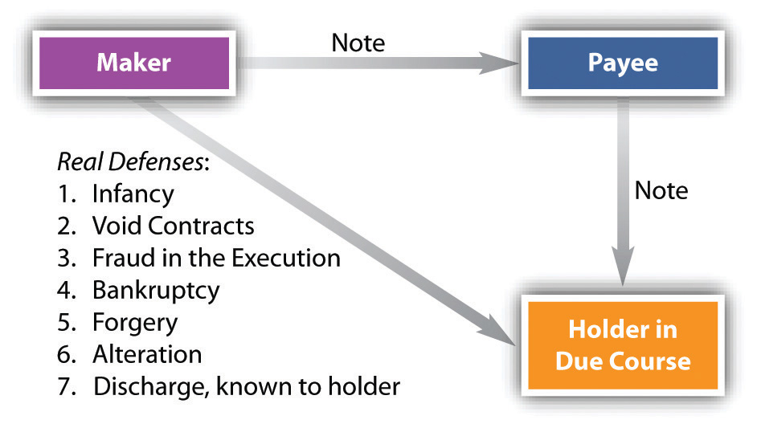
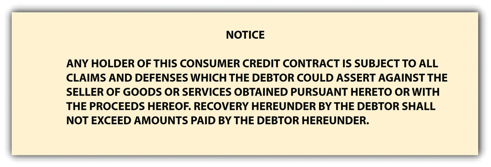

We mentioned in Section 24.1 "Holder in Due Course" that the importance of the holder-in-due-course status is that it promotes ready transferability of commercial paper by giving transferees confidence that they can buy and in turn sell negotiable instruments without concern that somebody upstream—previous holders in the chain of distribution—will have some reason not to pay. The holder-in-due-course doctrine makes the paper almost as readily transferable as cash. Almost, but not quite. We examine first the defenses to which the holder in due course (HDC) is not subject and then—the “almost” part—the defenses to which even HDCs are subject.
An HDC is not subject to the obligor’s personal defensesIn negotiable-instrument law, defenses that are not good against a holder in due course.. But a holder who is not an HDC is subject to them: he takes a negotiable instrument subject to the possible personal claims and defenses of numerous people.
In general, the personal defenses—to which the HDC is not subject—are similar to the whole range of defenses for breach of simple contract: lack of consideration; failure of consideration; duress, undue influence, and misrepresentation that does not render the transaction void; breach of warranty; unauthorized completion of an incomplete instrument; prior payment. Incapacity that does not render the transaction void (except infancy) is also a personal defense. As the Uniform Commercial Code (UCC) puts it, this includes “mental incompetence, guardianship, ultra vires acts or lack of corporate capacity to do business, or any other incapacity apart from infancy. If under the state law the effect is to render the obligation of the instrument entirely null and void, the defense may be asserted against a holder in due course. If the effect is merely to render the obligation voidable at the election of the obligor, the defense is cut off.”Uniform Commercial Code, Section 3-305, Comment 1. James White and Robert Summers, in their hornbook on the UCC, opine that unconscionability is almost always a personal defense, not assertable against an HDC.James White and Robert Summers, Uniform Commercial Code, 2/e, 575 (1980). But again, the HDC takes free only from personal defenses of parties with whom she has not dealt. So while the payee of a note can be an HDC, if he dealt with the maker, he is subject to the maker’s defenses.
An HDC in a nonconsumer transaction is not subject to personal defenses, but he is subject to the so-called real defensesIn negotiable-instrument law, defenses that are good against a holder in due course. (or “universal defenses”)—they are good against an HDC.
The real defenses good against any holder, including HDCs, are as follows (see Figure 24.2 "Real Defenses"):
Figure 24.2 Real Defenses
Though most of these concepts are pretty clear, a few comments by way of analysis are appropriate.
Forgery is a real defense to an action by an HDC. As we have noted, though, negligence in the making or handling of a negotiable instrument may cut off this defense against an HDC—as, for example, when a drawer who uses a rubber signature stamp carelessly leaves it unattended. And notice, too, that Section 3-308 of the UCC provides that signatures are presumed valid unless their validity is specifically denied, at which time the burden shifts to the person claiming validity. These issues are discussed in Triffin v. Somerset Valley Bank, in Section 24.3 "Cases" of this chapter.
Drawers, makers, and subsequent indorsers are not liable to an HDC if they have been discharged in bankruptcy. If they were, bankruptcy would not serve much purpose.
Whether an infant’s signature on a negotiable instrument is a valid defense depends on the law of the state. In some states, for instance, an infant who misrepresents his age is estopped from asserting infancy as a defense to a breach of contract. In those states, infancy would not be available as a defense against the effort of an HDC to collect.
Under Section 3-407 of the UCC, “fraudulent alteration” means either (1) an unauthorized change in an instrument that purports to modify in any respect the obligation of a party or (2) an unauthorized addition of words or numbers or other change to an incomplete instrument relating to the obligation of a party. An alteration fraudulently made discharges a party whose obligation is affected by the alteration unless that party assents or is precluded from asserting the alteration. But a nonfraudulent alteration—for example, filling in an omitted date or giving the obligor the benefit of a lower interest rate—does not discharge the obligor. In any case, the person paying or taking the instrument may pay or collect “according to its original terms, or in the case of an incomplete instrument that is altered by unauthorized completion, according to its terms as completed. If blanks are filled or an incomplete instrument is otherwise completed, subsection (c) places the loss upon the party who left the instrument incomplete by permitting enforcement in its completed form. This result is intended even though the instrument was stolen from the issuer and completed after the theft.” A moral here: don’t leave instruments lying around with blanks that could be filled in.
A void contract is distinguished from a voidable contract; only the former is a real defense.
You may recall that this is the rather unusual situation in which a person is tricked into signing a document. Able holds out a piece of paper for her boss and points to the signature line, saying, “This is a receipt for goods we received a little while ago.” Baker signs it. It is not a receipt; it’s the signature line on a promissory note. Able has committed fraud in the execution, and the note is void.
If the holder knows that the paper—a note, say—has already been paid, she cannot enforce it. That’s a good reason to take back any note you have made from the person who presents it to you for payment.
The holder-in-due-course doctrine often worked considerable hardship on the consumer, usually as the maker of an installment note.
For example, a number of students are approached by a gym owner who induces them to sign one-year promissory notes for $150 for a one-year gym membership. The owner says, “I know that right now the equipment in the gym is pretty rudimentary, but then, too, $150 is about half what you’d pay at the YMCA or Gold’s Gym. And the thing is, as we get more customers signing up, we’re going to use the money to invest in new equipment. So within several months we’ll have a fully equipped facility for your use.” Several students sign the notes, which the owner sells to a factorOne that lends money to another, taking back a negotiable instrument as security. (one that lends money to another, taking back a negotiable instrument as security, usually at about a 20 percent discount). The factor takes as an apparent HDC, but the gym idea doesn’t work and the owner declares bankruptcy. If this were a commercial transaction, the makers (the students) would still owe on the notes even if there was, as here, a complete failure of consideration (called “paying on a dead horse”). But the students don’t have to pay.
Whether the gym owner here committed fraud is uncertain, but the holder-in-due-course doctrine did often work to promote fraud. Courts frequently saw cases brought by credit companies (factors) against consumers who bought machines that did not work and services that did not live up to their promises. The ancient concept of an HDC did not square with the realities of modern commerce, in which instruments by the millions are negotiated for uncompleted transactions. The finance company that bought such commercial paper could never have honestly claimed (in the sociological sense) to be wholly ignorant that many makers will have claims against their payees (though they could and did make the claim in the legal sense).
Acting to curb abuses, the Federal Trade Commission (FTC) in 1976 promulgated a trade regulation rule that in effect abolished the holder-in-due-course rule for consumer credit transactions. Under the FTC rule titled “Preservation of Consumers’ Claims and Defenses,”16 Code of Federal Regulations, Section 433. the creditor becomes a mere holder and stands in the shoes of the seller, subject to all claims and defenses that the debtor could assert against the seller. Specifically, the rule requires the seller to provide notice in any consumer credit contract that the debtor is entitled to raise defenses against any subsequent purchaser of the paper. It also bars the seller from accepting any outside financing unless the loan contract between the consumer and the outside finance company contains a similar notice. (The required notice, to be printed in no less than ten-point, boldface type, is set out in Figure 24.3 "Notice of Defense".) The effect of the rule is to ensure that a consumer’s claim against the seller will not be defeated by a transfer of the paper. The FTC rule has this effect because the paragraph to be inserted in the consumer credit contract gives the holder notice sufficient to prevent him from becoming an HDC.
The rule applies only to consumer credit transactions. A consumer transactionA transaction in which an individual incurs an obligation primarily for personal, family, or household purposes. is defined as a purchase of goods or services by a natural person, not a corporation or partnership, for personal, family, or household use from a seller in the ordinary course of business.Uniform Commercial Code, Section 2-201(11). Purchases of goods or services for commercial purposes and purchases of interests in real property, commodities, or securities are not affected. The rule applies to any credit extended by the seller himself (except for credit card transactions) or to any “purchase money loan.” This type of loan is defined as a cash advance to the consumer applied in whole or substantial part to a purchase of goods or services from a seller who either (a) refers consumers to the creditor or (b) is affiliated with the creditor. The purpose of this definition is to prevent the seller from making an end run around the rule by arranging a loan for the consumer through an outside finance company. The rule does not apply to a loan that the consumer arranges with an independent finance company entirely on his own.
The net effect of the FTC rule is this: the holder-in-due-course doctrine is virtually dead in consumer credit contracts. It remains alive and flourishing as a legal doctrine in all other business transactions.
Figure 24.3 Notice of Defense
The privileged position of the HDC stands up against the so-called personal defenses, which are—more or less—the same as typical defenses to obligation on any contract, not including, however, the real defenses. Real defenses are good against any holder, including an HDC. These are infancy, void obligations, fraud in the execution, bankruptcy, discharge of which holder has notice, unauthorized signatures, and fraudulent alterations. While a payee may be an HDC, his or her rights as such are limited to avoiding defenses of persons the payee did not deal with. The shelter rule says that the transferee of an instrument takes the same rights that the transferor had. The Federal Trade Commission has abrogated the holder-in-due-course doctrine for consumer transactions.